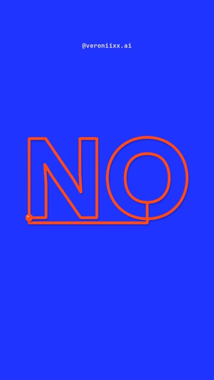
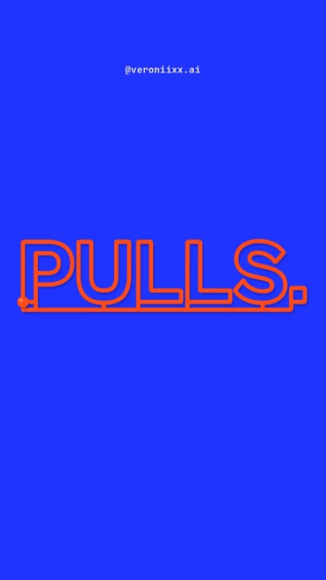
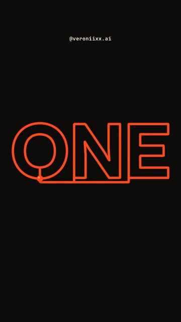
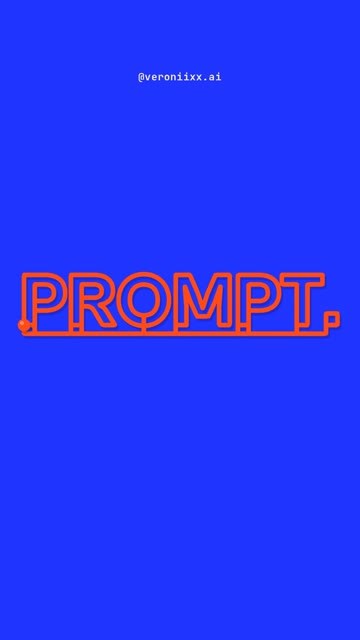

How I made an 18-second showreel where one orange line writes every word, draws a spiral, ties a knot and comes back to the dot it started from. The words are the real outlines of the letters. It loops forever. No editing app. Windows and Mac.




A reel with one hero: a line. It is pulled from shape to shape on the beat of the music, and every word it writes is traced from the real font. The last frame is the first frame, so on Instagram it never ends. Claude writes the code, the shapes and even the music.
Every shape, a word or a spiral, is turned into the same number of points: 1000. Then any shape can flow into any other, point by point. The ball is point number one, and the rest of the line follows a few frames late. That delay is what makes it feel like a real thread being pulled.
Windows Press Win, type PowerShell, open it.
Mac Press Cmd + Space, type Terminal, open it.
Windows Paste one line at a time. Answer Y when asked.
winget install -e --id OpenJS.NodeJS.LTS winget install -e --id Git.Git winget install -e --id Python.Python.3.13 winget install -e --id Gyan.FFmpeg
Mac Homebrew first, it will ask for your password. At the end it prints two lines under “Next steps”: run them, then run the second command.
/bin/bash -c "$(curl -fsSL https://raw.githubusercontent.com/Homebrew/install/HEAD/install.sh)"
brew install node git python ffmpeg
npm install -g @anthropic-ai/claude-code
Prefer an app to a terminal? Install Claude from claude.ai/download, it has a Code tab that does the same thing.
mkdir one-line-reel\ncd one-line-reel\nclaude
Set up a motion project in this folder. 1. Install Remotion (React 18 + TypeScript). 2. Check that Python works and install numpy and fontTools (with brotli, so it can read .woff2 fonts). 3. Check that ffmpeg works from the terminal. 4. Put this font in public/fonts: [the font file, for example Cabinet Grotesk Extrabold from fontshare.com]. Pick a heavy font with clear outlines. 5. Build a test composition, 1080x1920, 30 fps: an orange dot on a cream background. Render one frame to PNG and show me the path. If something is missing, install it yourself and tell me what you installed.
Words in square brackets are mine: put your own. Short words work best, one per beat.
Make a vertical reel, 1080x1920, 30 fps, 18 seconds (540 frames), a seamless loop. One hero only: an orange line (#FF4A17) with a small ball at its tip. The ball pulls the line and the tail follows a few frames behind, so you can see the line flow from shape to shape. No cuts, ever. THE SHAPES (a Python script writes them to a JSON file) - Words are the real outlines of the letters. Read the font with fontTools and flatten every letter outline into points. - Stitch all the outlines of one word into ONE line, left to right. Between letters the line runs as a stitch under the word, never through a letter. - Shapes: a dot, a straight line, the frame of the screen, a wave, a spiral, a circle, a trefoil knot. - Resample every shape to the same number of points (1000), so any shape can flow into any other. THE TIMELINE (120 BPM: one beat = 15 frames, the line moves on the beat) dot → straight line (pluck) → [ONE] → [LINE.] → [NO] → [CUTS.] → the frame of the screen → [WRITES.] → wave → [PULLS.] → spiral → [TIES.] → straight line, pluck → the drop: [TYPE] / [MOTION] / [LIGHT] / [DEPTH], one every half beat → circle → [LOOPS.] → [ONE] → [PROMPT.] → knot → [BY CODE.] → back to the dot. The last frame must be the same as the first frame. MOTION - The ball leads, the tail lags 3 frames behind. Add a small spring: the line overshoots the shape and settles, like a plucked string. - When the line is straight, a pluck makes it vibrate as a standing wave that dies out. - When a word is drawn, fill it softly. - The background changes on the beat: cream #F1E8D6, ink #0E0C0B, electric blue #2133FF. The new color opens as a circle from the ball. - My handle [@yourhandle] small at the top. Words stay between 220 px from the top and 380 px from the bottom (the Instagram interface). SOUND (write it in numpy, no samples) Plucked strings (Karplus-Strong), a deep kick, finger snaps and a sub bass, D minor, 120 BPM. Every pull of the line sounds like a plucked string. Loop the audio so the tails at the end flow into the start. Master to -14 LUFS, peak below -1 dBTP. CHECK BEFORE YOU SAY DONE 1. Render a contact sheet of 40+ frames and a zoomed still of every word. 2. Check: the stitch never cuts through a letter, no word is cut off, nothing sits in the interface zones. 3. Compare frame 0 and frame 539: the loop must not jump. 4. Render the MP4 with sound. Tell me what you checked and what I should watch for in motion.
Watch the first render on your phone. Then send notes like these:
The lines between the letters cut through them. Run the stitch under the word, like a baseline, and only go up into each letter where it starts.
It feels slow. The line should arrive on the beat, not after it. Shorten the pulls and make the ball lead harder.
I can see a jump when the video loops. Make the last frame exactly the first frame, and loop the music tails too.
The words are too small on a phone. Make each word fill about 75% of the width, but keep it out of the top 220 px and bottom 380 px.
The drop needs more energy: change the background on every half beat and add a short flash on the first word of the drop.
Replace the words with mine: [your 10 to 14 words]. Keep the same rhythm: one word per beat, short words on the drop.
Yes, that is the point. Keep them short: 2 to 7 letters work best. Long words get small on a phone.
No. You need to know what you want to see and say it clearly. Claude writes the shapes, the motion and the music.
Copy it and paste it to Claude with the words “here is the error, fix it and continue”.